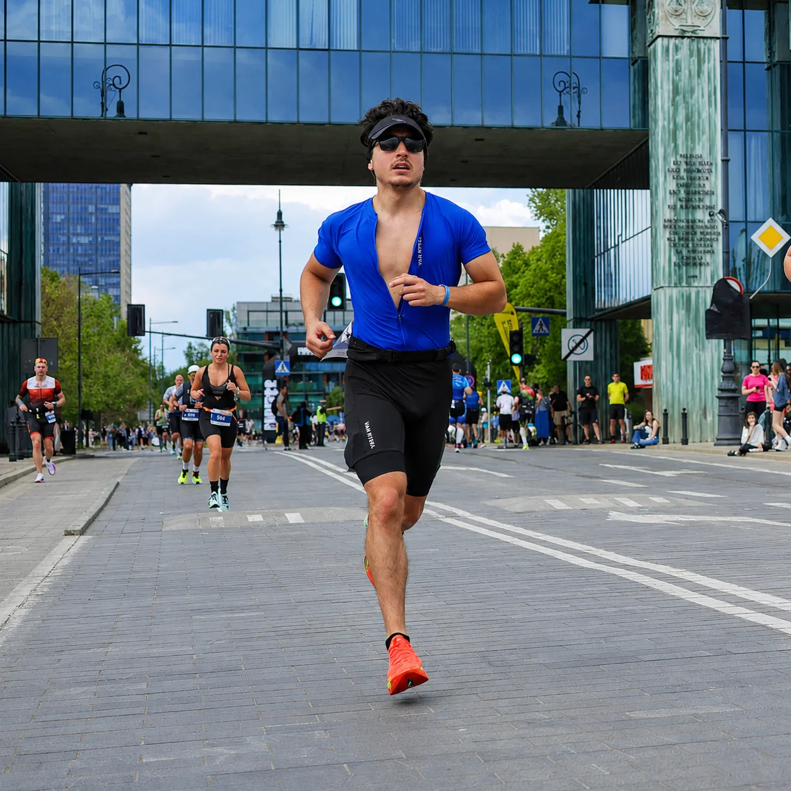

Journey & Proof
Every claim should lead to evidence.
IRONMAN 70.3 Warsaw, race history, official results, Strava activity, certificates, photos, videos and media links.
46Public race entries
217Tracked activities
2,322.6 kmTracked distance
195h 6mTracked time
16,899 mElevation gain
The origin chapter
IRONMAN 70.3 Warsaw.
6:08:15 official. First IRONMAN 70.3. Seven days before turning 20.
1.9 km swim, 90 km bike, and 21.1 km run. This is a half-distance triathlon—not one of the six future full-distance IRONMAN races.
{kind=link}
35.01 km
Longest training run
Rashaya to Sit Shaawene Shrine – Aammiq, Lebanon
August 18, 2024 · 3:23:22 · completed at 18 years old.
View on Strava ↗Full race archive
Search. Open. Verify.
Official race time is shown when available. Strava moving time is clearly separated from official race results.
Featured proof
The archive is broad. The evidence is specific.
Selected race moments below. Every available proof link remains attached to its race record.
{kind=link}
{kind=link}
{kind=link}
{kind=link}